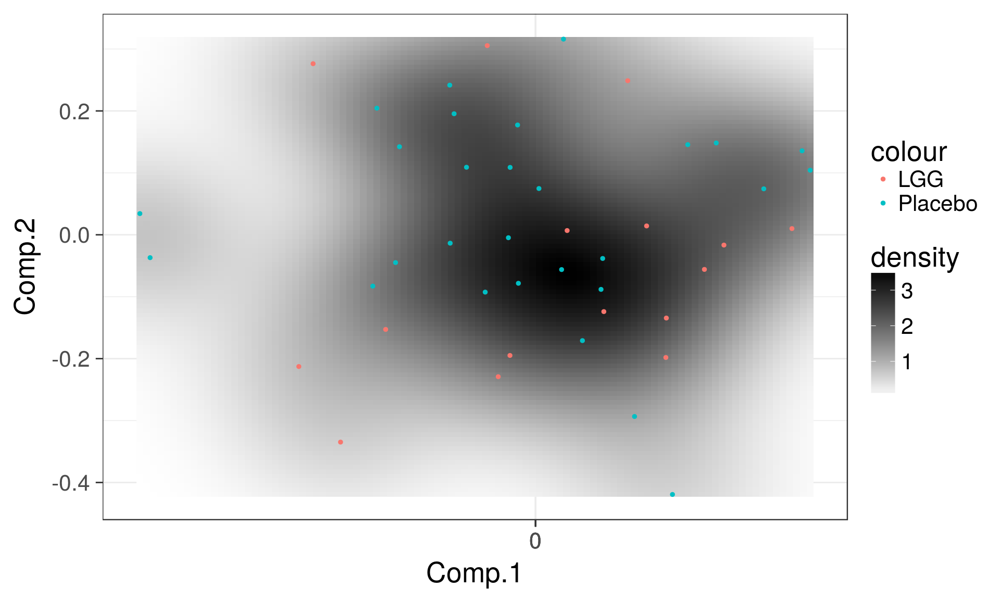

Group-wise comparisons of microbiome composition
PERMANOVA for community-level multivariate comparisons
PERMANOVA quantifies multivariate community-level differences between groups.
Load example data:
# Load libraries
library(microbiome)
library(ggplot2)
library(dplyr)
# Probiotics intervention example data
data(peerj32) # Source: https://peerj.com/articles/32/
pseq <- peerj32$phyloseq # Rename the example data
# Pick relative abundances (compositional) and sample metadata
pseq.rel <- transform(pseq, "compositional")
otu <- abundances(pseq.rel)
meta <- meta(pseq.rel)Visualize microbiome variation
Visualize the population density and highlight sample groups (probiotic treatment LGG vs Placebo):
p <- plot_landscape(pseq.rel, method = "NMDS", distance = "bray", col = "group", size = 3)
print(p)
PERMANOVA significance test for group-level differences
Now let us evaluate whether the group (probiotics vs. placebo) has a significant effect on overall gut microbiota composition. Perform PERMANOVA:
# samples x species as input
library(vegan)
permanova <- adonis(t(otu) ~ group,
data = meta, permutations=99, method = "bray")
# P-value
print(as.data.frame(permanova$aov.tab)["group", "Pr(>F)"])## [1] 0.34Checking the homogeneity condition
Check that variance homogeneity assumptions hold (to ensure the reliability of the results):
# Note the assumption of similar multivariate spread among the groups
# ie. analogous to variance homogeneity
# Here the groups have signif. different spreads and
# permanova result may be potentially explained by that.
dist <- vegdist(t(otu))
anova(betadisper(dist, meta$group))## Analysis of Variance Table
##
## Response: Distances
## Df Sum Sq Mean Sq F value Pr(>F)
## Groups 1 0.000016 0.0000156 0.0042 0.9487
## Residuals 42 0.156962 0.0037372